馍馍拾色器：基于 HSV 拾色器样式，支持 Oklab/Oklch 模式的拾色器。
色相环、S/V 方块、L/C/a/b 色条、数值框、选色历史和自定义按键都在一个面板里，明度与彩度可以按 Oklab 的 L 和 C 锁定。
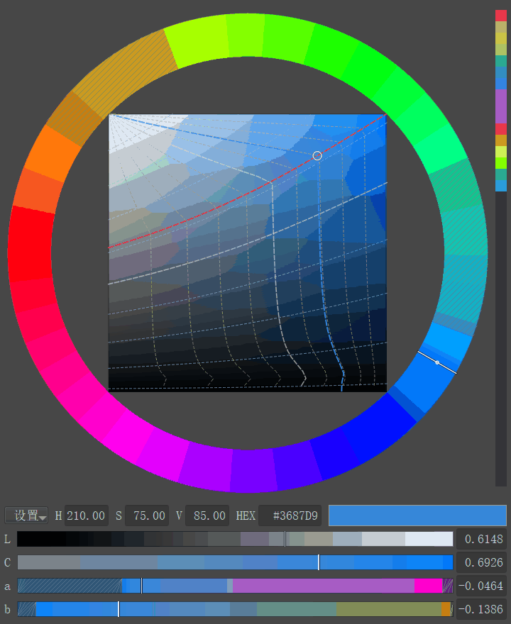
下图对比两种明度标准在 Krita 灰阶校样下的差别，第一组的彩条按灰阶定亮度，下面的灰条几乎不变；第二组的彩条按 Oklab L 定明度，下面的灰条在蓝紫一侧有点变深，这是因为 Oklab L 是感知明度，而灰阶校样看的是实际亮度，同一 Oklab L 下蓝紫色的实际亮度更低。下面左右两条演示锁定明度后的拖动：左边把 a 条从绿拖到红，右边把相对彩度从灰加到红，两种情况下下面的灰条都保持不变。
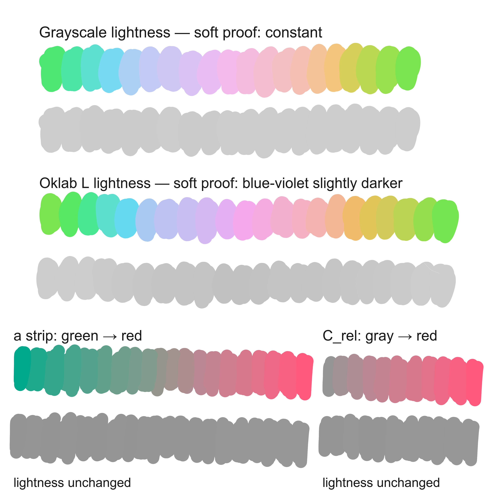
既可以像普通 HSV 拾色器一样使用，也可以按 Oklab/Oklch 模式操作。
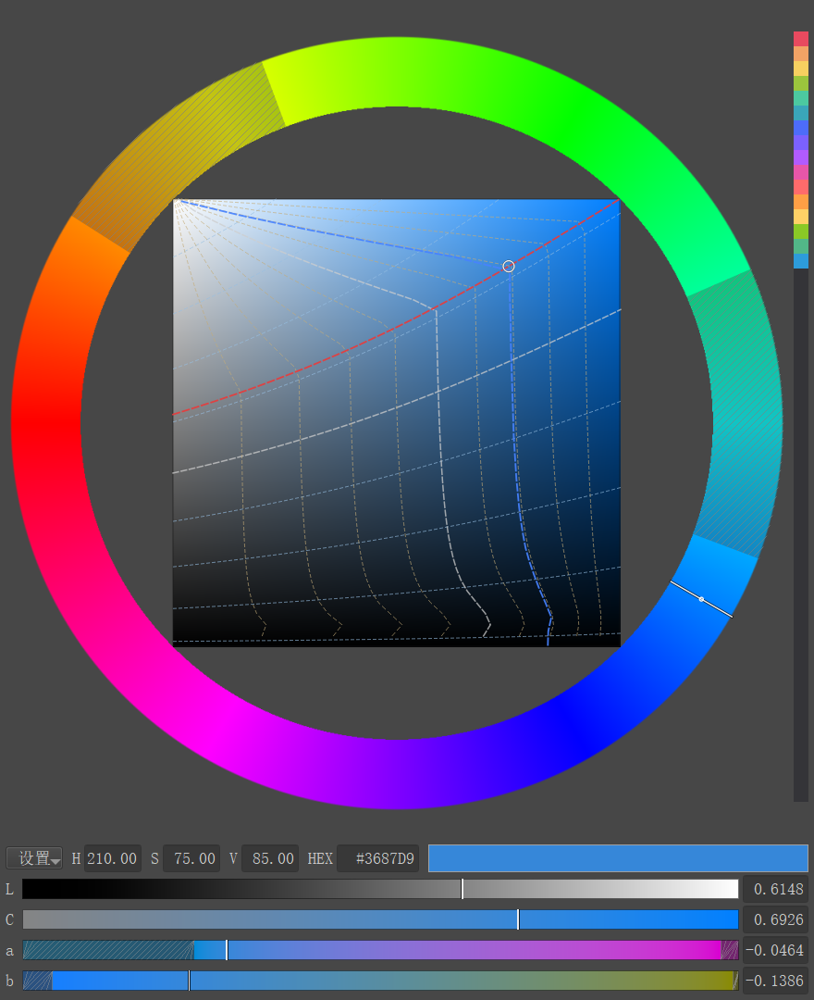
打开方式有两种：
Shift+B。在面板里拖动色相环、S/V 方块、L/C/a/b 色条，或直接编辑数值框，都能改色。改出的颜色实时写入 Krita 前景色；用 Krita 自带拾色器或吸管改色时，面板也会同步更新。界面语言跟随 Krita（中文 / 英文），Docker 面板与弹出面板是同一套界面。
色相环定色相，中间的 S/V 方块定饱和度和明度，手感跟 HSV 拾色器一样。
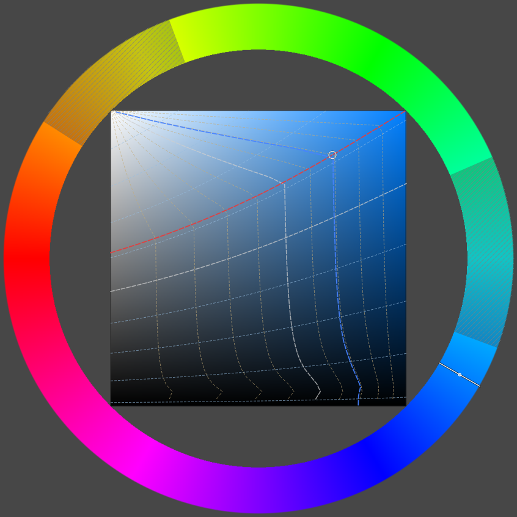
固定明度和绝对彩度后，色相环上有些角度在 sRGB 里并不存在，这些段会叠上灰色斜纹。
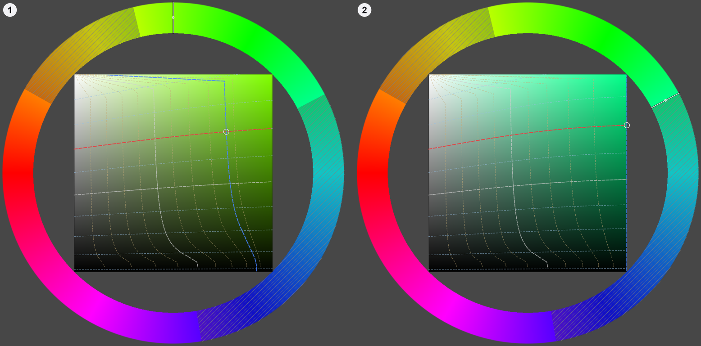
灰色斜纹段仍然可以通过左键点击和拖动（默认左键是锁定相对彩度，不受限制），用法和普通色相一样。不想看到提示时，在 设置 → 显示不可达色相提示 里关掉。
需要精确调整明度、彩度或 Oklab 的 a、b 分量时，可以拖色条，也可以直接在数值框里键入数值。
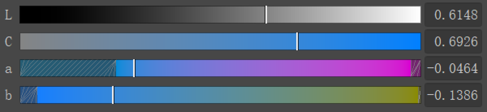
图是实际界面的 2× 整数放大，方便看清行标签和数值框里的读数。
Ctrl ×2、Ctrl+Shift ×4、Alt ×0.5。每个区域的鼠标键和修饰键组合都可以自己定义，改完立即生效。
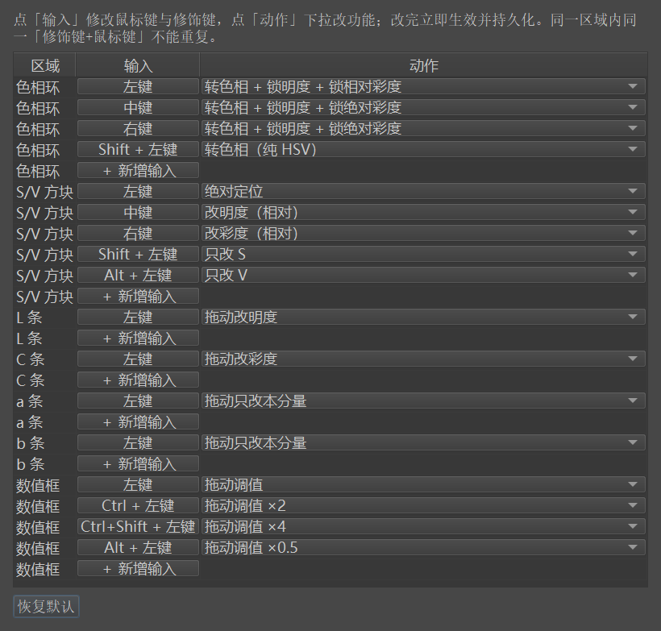
打开 设置 → 按键功能…，给左键、中键、右键分别搭配 8 种修饰键组合（无、Shift、Ctrl、Alt、Ctrl+Shift、Shift+Alt、Ctrl+Alt、Ctrl+Shift+Alt），选好区域、输入和动作后立即生效并保存。
修改立即在所有面板生效，不需要重启 Krita；没有单独配置的组合会沿用该鼠标键的「无」行动作。
| 区域 | 可用输入 | 默认键位 |
|---|---|---|
| 色相环 | 8 种修饰键组合，各配左键、中键、右键 | 左键 = 转色相 + 锁明度 L + 锁相对彩度 C_rel； 中键 / 右键 = 转色相 + 锁明度 L + 锁绝对彩度 C； Shift+左键 = 只改色相（纯 HSV） |
| S/V 方块 | 8 种修饰键组合，各配左键、中键、右键 | 左键 = 绝对定位； 中键 = 沿明度轨迹改明度（锁 C_rel）； 右键 = 沿等明度线改彩度（锁 L）； Shift+左键 = 只改 S； Alt+左键 = 只改 V |
| L / C / a / b 色条 | 8 种修饰键组合，各配左键、中键、右键 | 左键拖动 = 改该条分量； a、b 条只改本分量，明度与另一分量不动 |
| 数值框 | 8 种修饰键组合，各配左键、中键、右键 | 仅 H / S / V 三个框可拖动调值：左键 ×1； Ctrl+左键 ×2； Ctrl+Shift+左键 ×4； Alt+左键 ×0.5；单击编辑文本 |
按默认快捷键 Shift+B 就能在鼠标附近打开弹出面板，不必先打开 Docker 面板。
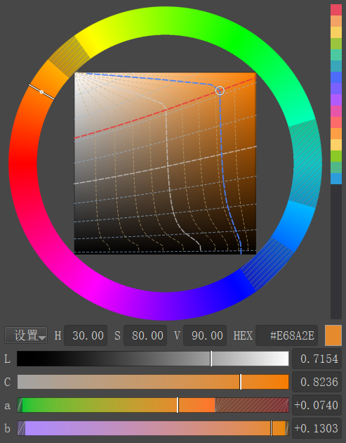
再按一次关闭；默认点击弹窗外面也会关闭，不需要时在 设置 → 点击弹出面板外时自动关闭 里关掉。弹窗和 Docker 面板是同一套界面，操作方式完全一样。
弹窗与 Docker 面板的颜色、数值、历史和设置实时同步。可以在设置里让弹窗保持置顶或跟随鼠标位置；弹窗超出 Krita 主窗口时会自动贴边。在文本输入框里按 Shift+B 只输入大写 B，不会把弹窗打开或关闭。
改色时，面板旁边会弹出一个小窗，并排对比当前颜色和最近两次用过的颜色。
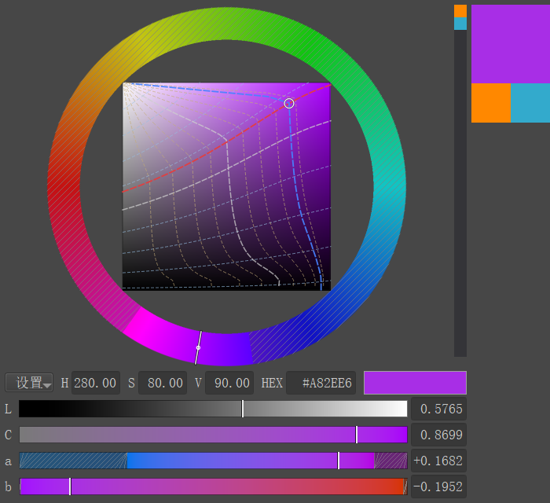
小窗是 100×150：上面 2/3 是当前选色，下面 1/3 左右并排，分别是上一次、上上次选色；选色不足两次的格子显示中灰。它贴着面板外侧显示，不挡面板和历史列，外侧放不下时自动换到另一边。
显示方式在 设置 → 浮层选项 里切换：
只有在本面板里改色才会弹出；用 Krita 吸管或自带拾色器改色时不弹出。
历史列保存最近用过的颜色，当前色块用来复制当前颜色的 HEX。历史最多保留 128 色，跨 Krita 会话保留；这是本插件自己的选色历史，不是 Krita 的系统颜色历史，需要系统颜色历史时按 H 打开 Krita 的「显示颜色历史」。
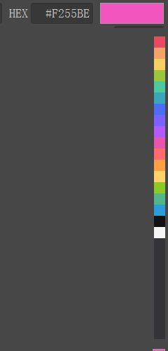
图是 HEX 数值框、当前色块与历史色块的局部拼合（实际像素）；真实界面里历史就是单列。
#RRGGBB。数值行最左边的「设置」按钮里集中了面板的显示、彩度、明度、浮层和弹窗选项。
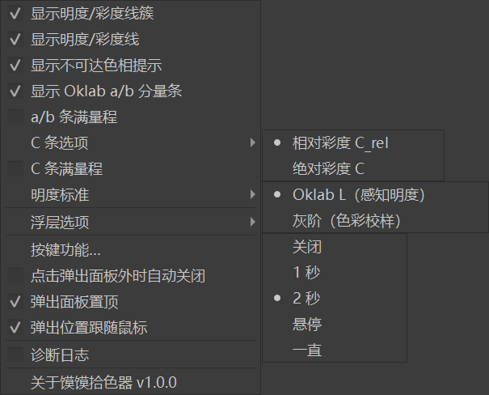
点击「设置」按钮展开菜单，逐项打开或切换。图中三个子菜单都已展开：C 条选项 = 相对彩度 C_rel（默认）/ 绝对彩度 C；明度标准 = Oklab L（感知明度，默认）/ 灰阶（色彩校样）；浮层选项 = 关闭 / 1 秒 / 2 秒 / 悬停（默认）/ 一直。
所有设置立即生效；Docker 面板与弹窗共享同一份设置。
| 设置项 | 作用 |
|---|---|
| 显示明度/彩度线簇 | 显示两族辅助线：等明度、等相对彩度各 9 条（默认开） |
| 显示明度/彩度线 | 显示红色等明度线与蓝色等相对彩度线（默认开） |
| 显示不可达色相提示 | 在够不到的色相段叠加灰色斜纹（默认开） |
| 显示 Oklab a/b 分量条 | 显示或收起 a、b 两条色条（默认显示） |
| a/b 条满量程 | 不勾（默认）：刻度只随明度变，越界段灰色斜纹、拖到底即停；勾选：每段都可达，刻度随另一分量变 |
| C 条选项 | 相对彩度 C_rel（默认，0~1）或绝对彩度 C |
| C 条满量程 | 仅绝对彩度生效：不勾（默认）固定 0~0.4；勾选后 0~当前明度与色相下的最大彩度 |
| 明度标准 | Oklab L（感知明度，默认）或灰阶（色彩校样） |
| 浮层选项 | 关闭 / 1 秒 / 2 秒 / 悬停（默认）/ 一直 |
| 按键功能… | 打开自定义按键表 |
| 点击弹出面板外时自动关闭 | 默认开；关掉后点击画布不会关闭弹窗 |
| 弹出面板置顶 | 默认开；自动关闭开着时置灰 |
| 弹出位置跟随鼠标 | 默认开；超出 Krita 主窗口时自动贴边 |
| 诊断日志 | 默认关；排查问题时打开，日志写入 %APPDATA%\krita\hsv_picker_debug.log，每次启动 Krita 自动关闭 |
| 关于馍馍拾色器 | 版本、许可与第三方信息 |
明度标准决定锁定的「明度」指什么：Oklab 感知明度，还是 Krita 灰阶校样下的灰度。
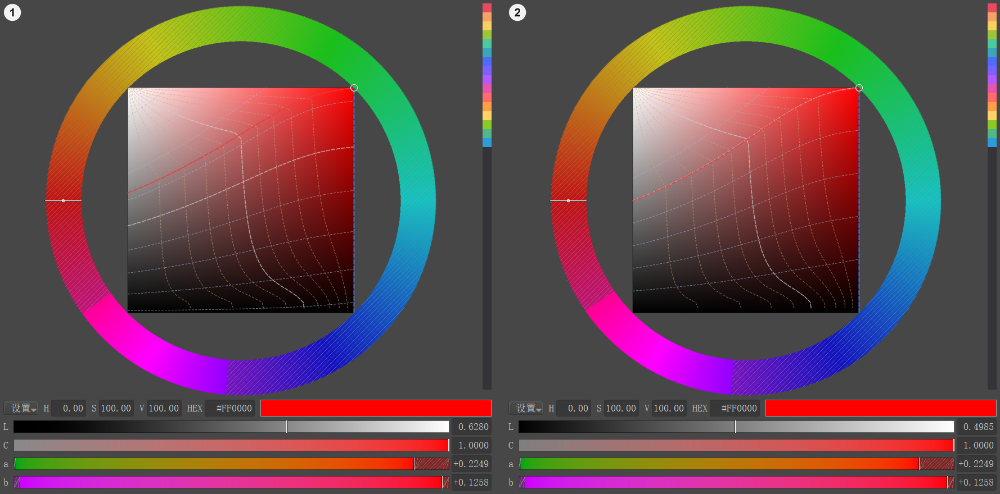
在 设置 → 明度标准 里二选一：Oklab L（感知明度，默认）或灰阶（色彩校样）。
Gray-D50-elle-V2-srgbtrc.icc）里的灰度保持不变。两张对比图展示了色相环三种拖动方式沿色相转一圈的结果，帮助判断该用哪种方式。
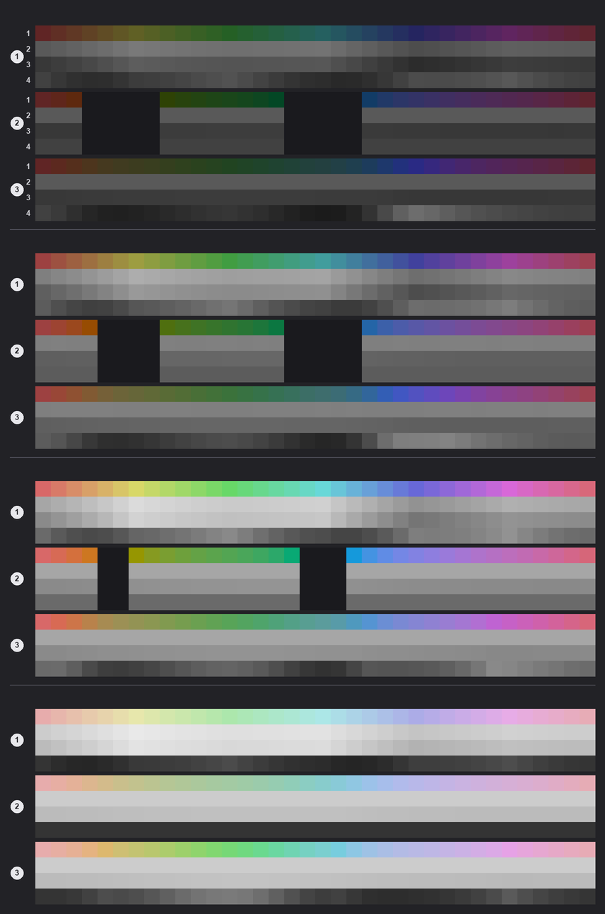
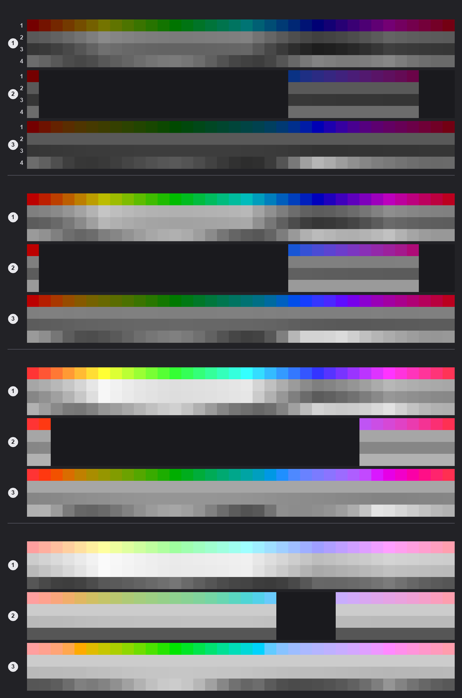
读图顺序（编号 → 含义）：
三种方式各自的差别：
这张 GIF 演示在色相环上按住鼠标键拖动时，哪些量会跟着变。
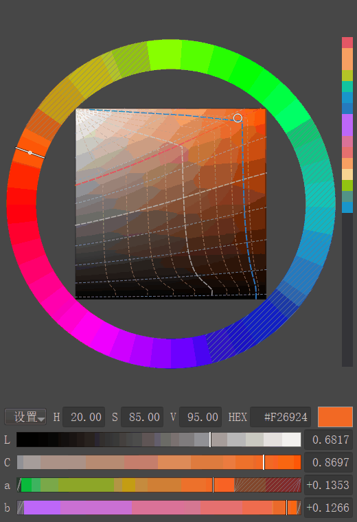
在色相环上按住左键、中键或右键拖动即可。
这张 GIF 演示单独微调 Oklab 的 a、b 两个分量。
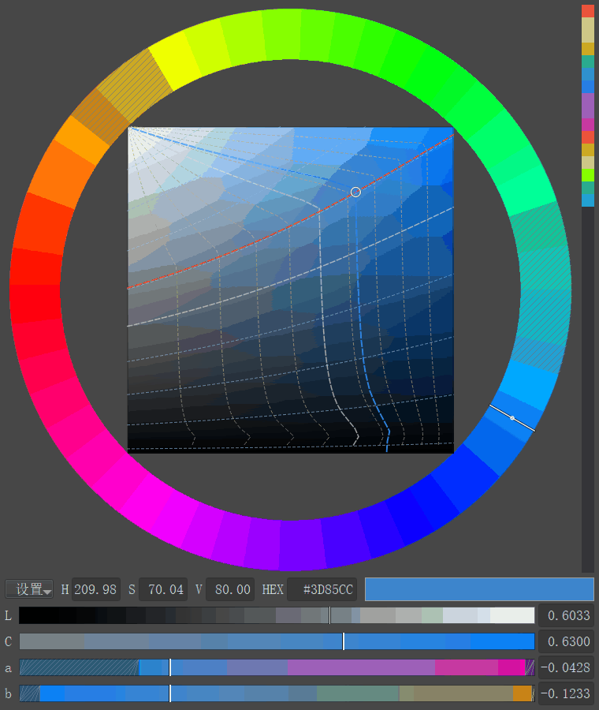
在 a 条或 b 条上按住左键拖动即可。
拖动只改本分量，明度和另一个分量保持不动；色相环游标、方块色点和其他色条同步显示同一个颜色。
插件需要 numpy，对于 Windows11 + krita5.3.x 只需要这一个 zip，发布包已经内置 numpy，不需要另外安装。
MomoColorPicker-<版本>-win64-krita5.3.zip。Tools > Scripts > Import Python Plugin From File...）。Shift+B。为什么明度到不了 1.0？ 固定彩度时明度有物理上限：越接近白色，颜色必须越接近中性灰。明度条在亮端会自动降低彩度；要到 L = 1.0，需要把彩度降到 0（纯白）。
为什么色相环上有些角度颜色不动？ 中键 / 右键锁的是「明度 L + 绝对彩度 C」；固定这两个量后，sRGB 里只有一部分色相存在。指针角度继续跟手，颜色停在角度最近的可达边界，转回可达范围就立刻跟上。想整圈都顺畅，用左键（锁相对彩度）。
相对彩度和绝对彩度怎么选？ 日常选色用相对彩度（默认）：浓淡比例稳定，任何色相和明度都可达，数值 0~1 直观。需要固定「离灰轴的距离」时（复现色板、按绝对彩度做渐变），在 设置 → C 条选项 切成绝对彩度；切过去后部分色相到不了，量程可选固定 0~0.4 或 0~当前最大彩度（C 条满量程）。
切到灰阶后拖 a、b，为什么 Oklab L 会变？ 灰阶标准锁的是灰阶值；a、b 改变时，要让灰阶严格不变，Oklab L 就必须跟着变。想锁 Oklab L，把 设置 → 明度标准 切回 Oklab L。
为什么插件包有几十 MB？ Windows 发布包内置 numpy 2.3.0（BSD-3-Clause）；Krita 内嵌的 Python 没有 numpy，内置它才能做到下载 zip、导入即可用。
Shift+B 和别的功能冲突怎么办？
打开 设置 → 配置 Krita → 快捷键 → 脚本 →「Show Momo Color Picker」，改成别的组合即可；插件跟随这个快捷键，Shift+B 只是默认值。
安装后在哪儿打开插件？
设置 → 面板列表 → 馍馍拾色器；也可以按 Shift+B 弹出面板。如果面板列表里没有，到 设置 → 配置 Krita → Python 插件管理器 确认插件已勾选，然后重启 Krita。
怎么卸载？
设置 → 配置 Krita → Python 插件管理器，取消勾选「馍馍拾色器」并重启 Krita 即可停止加载；要彻底删除，再删掉 pykrita/hsv_picker.desktop、pykrita/hsv_picker/ 和 %APPDATA%\krita\actions\hsv_picker.action。
C = √(a² + b²)，h = atan2(b, a)。#RRGGBB）。色相环上的「不可达」和 a、b 条的可达范围，都由 sRGB 色域决定。C = √(a² + b²)；0 就是灰轴。C > C_max(L, h) 的色相在 sRGB 里不存在。Gray-D50-elle-V2-srgbtrc.icc」时，那张灰块的灰度值。它按线性 sRGB 的相对亮度（0.2126729 R + 0.7151522 G + 0.0721750 B，归一到纯白 = 1）再经 sRGB 编码得到，和 Oklab L 不是一回事。#RRGGBB。H。pykrita/hsv_picker/vendor/numpy-2.3.0.dist-info/LICENSE.txt。Momo Color Picker: an HSV-style picker that also works in Oklab/Oklch mode.
The hue ring, SV square, L/C/a/b strips, value fields, pick history and custom keys are all in one panel, and lightness and chroma can be locked to Oklab L and C.
The chart below compares the two lightness standards under Krita's grayscale soft proof: the first pair has a constant grayscale value (its soft-proof gray stays almost flat); the second pair has a constant Oklab L (its soft-proof gray gets a little darker towards blue-violet, because Oklab L is perceptual lightness while the soft-proof gray follows actual luminance — at the same Oklab L, blue-violet hues have lower luminance). The two strips below (left and right) show locked-lightness drags — left: the a strip from green to red; right: relative chroma from gray to red — in both cases the gray strip below stays unchanged.
Use it like an ordinary HSV picker, or work in Oklab/Oklch mode.
Open it in two ways:
Shift+B.In the panel, drag the hue ring, the SV square or the L/C/a/b strips, or edit the value fields directly. The color you pick is written to Krita's foreground in real time, and the panel follows when you change the color with Krita's own picker or the color sampler. The UI follows Krita's language (Chinese / English), and the Docker panel and the popup are the same interface.
The ring sets the hue and the square in the middle sets saturation and value, with the familiar HSV feel.
On the ring, 0° red is at 9 o'clock and the angle increases clockwise.
The square's corners touch the ring's inner circle, so the four gaps between them also work like the ring.
Once lightness and absolute chroma are fixed, some angles on the ring do not exist in sRGB; those spans get a gray hatch.
Hatched spans can still be clicked and dragged with the left button (the left button locks relative chroma, which is not limited), just like ordinary hues. To hide the hint, turn off Settings → Show unreachable hue hint.
To fine-tune lightness, chroma or the Oklab a/b components precisely, drag a strip or type a value directly.
The image is a 2× integer enlargement of the real interface, so the row labels and field readings are easy to read.
Ctrl, 4× with Ctrl+Shift, 0.5× with Alt.Every area can use the mouse buttons and modifier keys you like, and changes take effect right away.
Open Settings → Key functions..., then pair the left, middle and right buttons with 8 modifier combinations: None, Shift, Ctrl, Alt, Ctrl+Shift, Shift+Alt, Ctrl+Alt and Ctrl+Shift+Alt. Choose an area, an input and an action, and the change takes effect and is saved immediately.
Changes apply to all panels at once, with no Krita restart, and a combination that is not configured separately falls back to the plain (no modifier) row of the same mouse button.
| Area | Available inputs | Default keys |
|---|---|---|
| Hue ring | 8 modifier combinations, each with left, middle and right button | Left = rotate hue + lock L + lock relative chroma C_rel; middle / right = rotate hue + lock L + lock absolute chroma C; Shift+left = rotate hue only (plain HSV) |
| SV square | 8 modifier combinations, each with left, middle and right button | Left = absolute positioning; middle = change lightness along its trajectory (locks C_rel); right = change chroma along the equal-lightness line (locks L); Shift+left = S only; Alt+left = V only |
| L / C / a / b strips | 8 modifier combinations, each with left, middle and right button | Left-drag = change that component; on the a and b strips only that component changes, lightness and the other component stay put |
| Value fields | 8 modifier combinations, each with left, middle and right button | Only the H / S / V fields can be drag-adjusted: left-drag x1; Ctrl+left x2; Ctrl+Shift+left x4; Alt+left x0.5; click to edit the text |
Press the default shortcut Shift+B to open the popup near the mouse, without opening the Docker panel first.
Press it again to close. By default, clicking outside the popup also closes it; turn that off in Settings → Auto-close popup when clicking outside. The popup is the same interface as the Docker panel and works the same way.
The popup and the Docker panel stay in sync for color, values, history and settings. You can keep the popup always on top or let it follow the mouse, and it clamps back inside the Krita main window when it would go outside. Pressing Shift+B inside a text field only types an uppercase B; it never opens or closes the popup.
While you adjust a color, a small window appears next to the panel and compares the current color with the last two you picked.
The window is 100×150: the top 2/3 shows the current color and the bottom 1/3 is split into two squares, left for the last picked color and right for the one before it; a slot with no color yet shows mid gray. It sits just outside the panel without covering the panel or the history column, and flips to the other side when there is not enough room.
Choose the display mode in Settings → Overlay options:
It only appears for changes made in this panel; using Krita's color sampler or its own picker does not trigger it.
The history column brings back recently used colors, and the current-color swatch copies the current HEX value. History keeps up to 128 colors and survives Krita sessions; this is the picker's own color history, not Krita's system color history — for that, press H to open Krita's Show Color History.
The image is a composite of the HEX field, the current-color swatch and the history column at actual pixels; in the real interface the history is a single column.
#RRGGBB.The Settings button at the far left of the value row gathers the panel's display, chroma, lightness, overlay and popup options.
Click Settings to open the menu, then turn items on or switch between them. The image shows all three submenus expanded: C strip options = Relative chroma C_rel (default) / Absolute chroma C; Lightness standard = Oklab L (perceptual, default) / Grayscale (soft proof); Overlay options = Off / 1 second / 2 seconds / Hover (default) / Always.
Every setting takes effect immediately, and the Docker panel and the popup share the same settings.
| Setting | Effect |
|---|---|
| Show lightness/chroma cluster lines | Show two families of guide lines: 9 equal-lightness and 9 equal-relative-chroma lines (on by default) |
| Show lightness/chroma through-lines | Show the red equal-lightness and blue equal-relative-chroma lines (on by default) |
| Show unreachable hue hint | Add a gray hatch over hues that cannot be reached (on by default) |
| Show Oklab a/b strips | Show or hide the a and b strips (shown by default) |
| a/b strips full range | Off (default): the scale follows lightness only, out-of-range spans are hatched and dragging stops at the end; On: every span is reachable, but the scale follows the other component |
| C strip options | Relative chroma C_rel (default, 0-1) or absolute chroma C |
| C strip full range | Absolute chroma only: off (default) fixes the range at 0-0.4; on makes it 0 to the maximum chroma at the current lightness and hue |
| Lightness standard | Oklab L (perceptual, default) or Grayscale (soft proof) |
| Overlay options | Off / 1 second / 2 seconds / Hover (default) / Always |
| Key functions... | Open the custom key table |
| Auto-close popup when clicking outside | On by default; when off, clicking the canvas does not close the popup |
| Keep popup always on top | On by default; greyed out while auto-close is on |
| Popup at mouse position | On by default; clamps back inside the Krita main window when it would overflow |
| Diagnostic log | Off by default; turn it on when troubleshooting; writes %APPDATA%\krita\hsv_picker_debug.log and turns itself off on every Krita start |
| About Momo Color Picker | Version, license and third-party notices |
The lightness standard decides what "lightness" means when locking: Oklab perceptual lightness, or the gray value in Krita's grayscale soft proof.
Choose one in Settings → Lightness standard: Oklab L (perceptual, default) or Grayscale (soft proof).
Gray-D50-elle-V2-srgbtrc.icc).The two charts compare the three ring drag modes over a full turn of hue, to help you decide which one to use.
Read them by the numbers:
How the three modes differ:
This GIF shows which quantities follow when you drag on the ring.
Hold the left, middle or right button on the ring and drag.
This GIF shows how to fine-tune the Oklab a and b components one at a time.
Hold the left button on the a strip or the b strip and drag.
Only the dragged component changes; lightness and the other component stay put, and the ring cursor, the square's color point and the other strips all follow the same color.
The plugin needs numpy. On Windows 11 + Krita 5.3.x one zip is all you need: numpy is already bundled, so nothing else has to be installed.
MomoColorPicker-<version>-win64-krita5.3.zip.Shift+B.Why can't I reach lightness 1.0? With chroma fixed there is a physical limit: the closer a color gets to white, the closer it must be to neutral gray. The lightness strip reduces chroma near the bright end; reaching L = 1.0 requires chroma 0 (pure white).
Why does the color not move at some angles on the ring? The middle / right button locks lightness L + absolute chroma C; with both fixed, only some hues exist in sRGB. The pointer keeps tracking your angle while the color stops at the angularly nearest reachable boundary, and follows again as soon as you get back. Use the left button (locks relative chroma) if you want a smooth full turn.
Relative or absolute chroma: which should I use? Use relative chroma (the default) for everyday picking: the saturation ratio is stable, every hue and lightness is reachable, and the 0-1 scale is easy to read. Switch to absolute chroma in Settings → C strip options when you need a fixed distance from the gray axis (reproducing a palette, gradients by absolute chroma); some hues then become unreachable, and the range can be the fixed 0-0.4 or 0 to the current maximum (C strip full range).
Under Grayscale, why does Oklab L change when I drag a / b? The Grayscale standard locks the gray value; to keep it exactly constant while a or b changes, Oklab L has to move. Switch Settings → Lightness standard back to Oklab L if you want to lock Oklab L.
Why is the package tens of MB? The Windows package bundles numpy 2.3.0 (BSD-3-Clause); Krita's embedded Python has no numpy, and bundling it is what makes "download the zip, import, use" work.
What if Shift+B conflicts with something else? Open Settings → Configure Krita → Shortcuts → Scripts → "Show Momo Color Picker" and pick another combination; the plugin follows that shortcut, and Shift+B is only the default.
Where do I find the plugin after installing it? Settings → Dockers → Momo Color Picker, or press Shift+B to pop up the panel. If it is not in the docker list, check Settings → Configure Krita → Python Plugin Manager, make sure the plugin is enabled, and restart Krita.
How do I uninstall it? In Settings → Configure Krita → Python Plugin Manager, uncheck Momo Color Picker and restart Krita to stop loading it; to remove it completely, also delete pykrita/hsv_picker.desktop, pykrita/hsv_picker/ and %APPDATA%\krita\actions\hsv_picker.action.
C = √(a² + b²) and h = atan2(b, a).#RRGGBB). The "unreachable" spans on the ring and the reachable range of the a / b strips are both decided by the sRGB gamut.C = √(a² + b²); 0 is the gray axis.C > C_max(L, h) do not exist in sRGB.Gray-D50-elle-V2-srgbtrc.icc. It is computed from linear-sRGB relative luminance (0.2126729 R + 0.7151522 G + 0.0721750 B, normalized so white = 1) and then sRGB-encoded; it is not the same as Oklab L.#RRGGBB format.H.pykrita/hsv_picker/vendor/numpy-2.3.0.dist-info/LICENSE.txt.